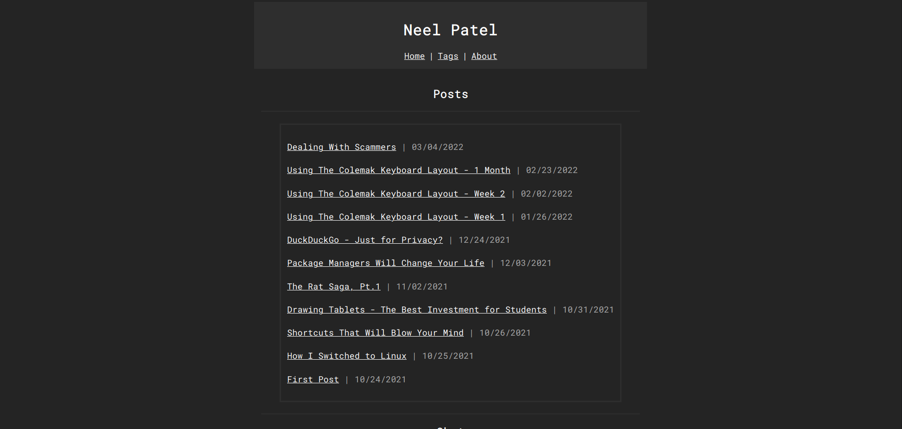

New Site Layout
2022-04-26
After about four months of working on and off on a new website layout, I've finally reached the point where I can share my website again! It took a lot longer because I actually started again from scratch.
Not only did I create a new HTML/CSS layout, but I also developed my own "blog engine". It's a simple Python script that converts Markdown files into HTML files and updates the RSS feed, JSON file, and the blog HTML file so that you can access it from my website. Earlier, I was using Jekyll which honestly is perfectly fine for my website; however, it felt too easy. I didn't really understand exactly what Jekyll was doing, but by creating that Python script, I gained a bigger picture. My reasoning while making the script was that I felt Jekyll was bloated and too feature-rich, but what bothered me the most is that Jekyll has way too many dependencies. Unlike Jekyll, my Python script depends on just two Python libraries: Markdown (to convert Markdown to HTML) and sys (to use arguments straight from the terminal).
While you can do what I did, I highly doubt that what I'm doing is technically correct and following normal web standards/procedures. Not only that, but writing the script without really understanding the technology can be daunting. Jekyll is still very good if all you're looking for is a blog engine. It's quick to set up, very hassle-free, and super easy to use.
In terms of features, my new website has gained and lost some. I no longer use tags, although I don't think it would be too difficult to add them back (I probably won't though). Instead, I think the feature I replaced them with is significantly better. I made my blogs searchable on my website. It uses a little bit of JavaScript and a JSON file.Web Dev Simplified made a great video that I followed to implement it on my website. Once again, this is not using any JS libraries or frameworks; it's just plain old JavaScript.
My home page also displays random images I found on the internet every time you refresh the page (using a simple JavaScript script that selects a random number and chooses an image based on an array of images). I will be adding more in the future, and I will also need to manually compress them as well, since collectively they are about the same size as the rest of the website.
Overall, I'm very pleased with the design of my website. There are things I still want to add, such as comments under my blog posts as well as implementing random web apps on my website. If you're feeling nostalgic for the old design, here's my final screenshot before I published the new layout:

Update 2024:
I forgot to make a new blog post about my new new site layout, but my website no longer has comments because nobody actually reads these posts and it's not worth the hassle of maintaining comments.